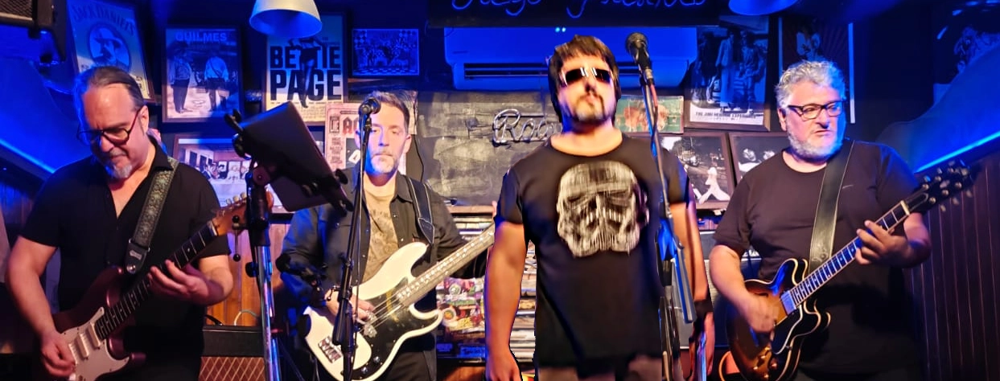

Incancelables

UN PASO ATRAS PARA ESTAR EN LA VANGUARDIA
Dios-like baja su pulgar y una vez mas vuelve a arder la hoguera digital en cyber-salem.
El humo del hate, escala en agonizantes espirales la conciencia colectiva, parasitando ideas que se vuelven consignas machacadas a fuerza de reposts y views.
No existe un click salvador que te libere... Solo la música